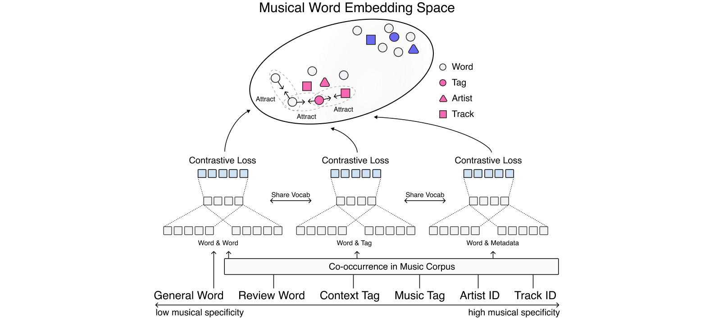
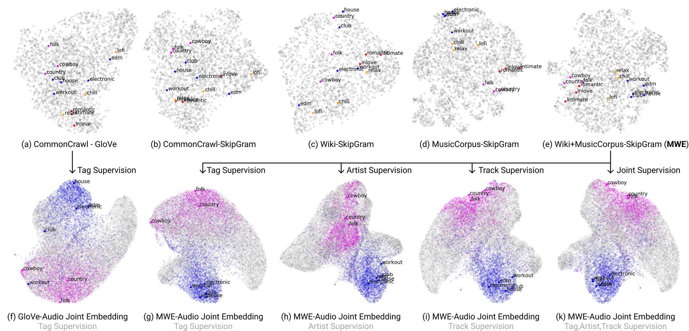
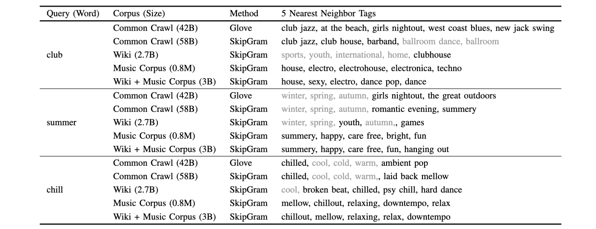

Musical Word Embedding for Music Tagging and Retrieval
IEEE Transactions on Audio, Speech and Language Processing (submitted) - SeungHeon Doh, Jongpil Lee, Dasaem Jeong, Juhan Nam
- Paper on Arxiv (will be updated)
- Implementation Code
- Pre-trained embedding vectors on Zenodo (will be updated)
Abstract
Word embeddings have become an essential means for text-based information retrieval. Traditionally, word embeddings are learned from large quantities of general and unstructured text data. However, in the domain of music, traditional embeddings can struggle with semantic understanding in musical contexts or identifying music-related entities such as artists and tracks. To address this issue, we propose a new approach called Musical Word Embedding (MWE), which is learned using a broad spectrum of text corpora, ranging from general to music-specific words.
Visualization
In the comparison of different word embedding space, general corpus word embedding tend to overlap different emotion clusters (Figure-(a,b,c)). For example, the embedding vectors of `country' and `club', which are different music listening contexts, are located close together. On the other hand, music corpus embedding trained show strong cohesion between words of similar semantic (Figure-(d,e)). It's worth noting that balanced corpus word embedding comprehend the music listening context while preserving a large vocabulary capacity (Figure-(e)). In the case of the audio-word embedding space, due to space constraints, we only visualize embeddings trained using the general semantic GloVe embedding and balanced semantic Musical Word Embedding (MWE). There were no or very few tracks annotated with `relex', `chill', `lofi', `romantic', `inlove', `intimate'. The tracks related to `electronic', `house', `club', `workout' and `country', `folk', `cowboy' are activated by color. When comparing the joint embedding space model using tag supervision, MWE-audio joint embeding space showed strong cohesion with respect to listening context words such as `club' or `workout' than GloVe-audio joint embeding space. Also, if we compare the different supervisions, the artist and track supervision show strong cohesion for unseen words such as `cowboy' than tag supervision. This shows that joint embedding space trained with strong musical specificity using artist and track supervision has better generalization than tag supervision.
Multi Query Retrieval Demo
We report the results for MSD, which are datsets reported in the paper.
| Query Text | Similar Music 1 | Similar Music 2 | Similar Music 3 |
|---|---|---|---|
| deep house in miami ocean | |||
| aggressive workout | |||
| meditation in forest | |||
| cozy summer breeze |
Zeroshot Annotation Results
We share the annotation results for both classic and new songs. We can see that the results are reasonable even if we did not use seen tags in both musical and contextual domains. The unseen means a tag not using in the training stage.
| Smells like teen spirit-Nirvana | Dynamite-BTS |
|
|
|
Query Recommendation
Table shows several examples of query recommendation results. For example, given word `club' as a search query, users can substitute or enhance the query with more specific genre words such as `house', `club jazz', or `club house'. This recommendation performance is outperformed when the listening context and musical semantics are well blended. For the `summer' query, similar seasons such as `winter', `spring', `autumn' are recommended in the word embedding trained from general corpus, such as CommonCrawl, Wikipedia. On the other hand, in the case of word embedding trained from musical corpus, recommended tags are `happy', `bright, `fun'. This trend is also seen in `chill' query. Although `chill' and `cool' have similar meanings in the dictionary, they have a completely different atmosphere musically.
